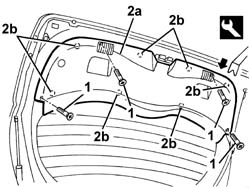

7015A04 tailgate interior panel - r+r
- Path
- Procedures > 70 FITTINGS > 7015 TAILGATE/ > 7015A tailgate assembly > 7015A04 tailgate interior panel - r+r
- Kind
- repair procedure (removal / refitting; the operation number is the code)
- Applies to
- all engines; all production periods
- Interactive page
- https://sloeber94.github.io/elrnDB-a147/en/#/3025733
Applies to: all engines; all production periods
 Removing
Removing
 Refitting
RefittingOpen the tailgate.
1. Unscrew the panel retaining bolts.
2. Remove the panel (2a) after removing it from the internal retainers (2b) using the appropriate tool.
 | Name | Country |
|---|---|---|
2 | Scraper blade | 1.823.015.000 |

Applies to: all engines; all production periods
Refitting
RemovingCheck that the panel is undamaged and that the retainers are undamaged and correctly positioned.
Fit the panel.
Fit the panel, engaging the retainers.
Tighten the panel fixing bolts.
Topics that link to this page (11)
- 5050C10 rear window washer jet - r+r clean and/or position
- 5050C42 rear wiper motor - r+r
- 5505C41 cabin wiring - r r
- 7015A58 internal tailgate moulding (one) - r+r
- 7015B14 l/h or r/h tailgate lock (one) - r+r or repair with panel/protection removed
- 7015B36 lock block-r r
- 7015B70 tail-gate lock motor - r r and check lock supply line
- 7035B14 rear window glass r r includes cleaning of housing
- 7035B16 Tailgate windscreen (bonded type) WINDOW GLASS - R.R. - Includes. cleaning housing in tailgate
- 7055A81 BADGE on boot lid - R.R.
- 7210E56 R.R. TAILGATE